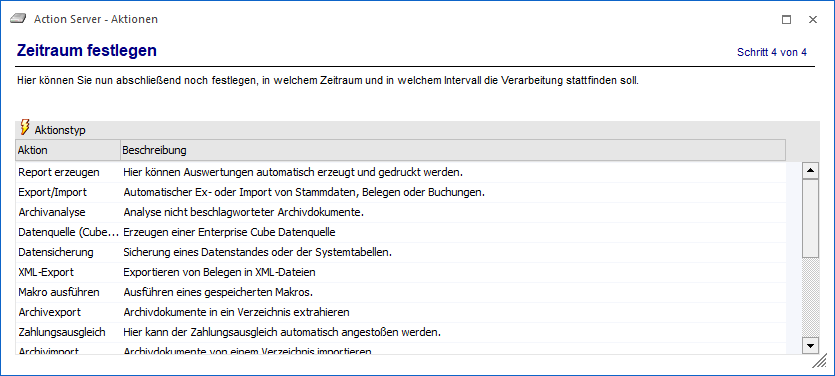

Im ersten Schritt des Assistenten kann eine der zur Verfügung stehenden Aktionen ausgewählt werden.

Folgende Aktionen stehen hierbei zur Auswahl:
ü Report erzeugen
Mit dieser Aktion
können jene Reports erzeugt werden, welche im Menüpunkt Reportdefinition angelegt worden
sind.
Beispiele
WinLine FIBU:
Kontoblatt, OP-Blatt, Saldenliste, Bilanz
WinLine FAKT: Statistik,
Fakturenbuch, Aktivitätencontrolling, Backlog
WinLine KORE: Kore-Statistik,
Gruppenstatistik, Kostenstellenbudgetvergleich
WinLine LIST: Alle definierten
Listen
WinLine INFO: MesoCalc
WinLine START: Datencheck
ü Export/Import
Mit dieser Aktion
können die Vorbelegungen aus den verschiedenen EXIM-Fenstern (ähnlich wie im
EXIM-Watchdog) abgearbeitet werden.
ü Archivanalyse
Mit dieser Aktion
kann die Archivanalyse durchgeführt werden.
ü Datenquelle (Cube) erzeugen
Mit
dieser Aktion können angelegte Cubes aktualisiert werden, d.h. die auf der
Festplatte befindliche CUBE-Datei und die Daten innerhalb der Datenquelle werden
erneuert.
ü Datensicherung
Mit dieser Aktion
kann die Sicherung von Mandanten, Systemtabellen oder Systemdateien vorgenommen
werden.
ü XML-Export
Mit dieser Aktion können
Belege als XML-Dateien exportiert werden.
ü Makro ausführen
Mit dieser Aktion
können in der WinLine aufgezeichnete Makros (zum Erstellen von Auswertungen oder
dergleichen) ausgeführt werden.
ü Archivexport
Mit dieser Aktion
können analysierte Archivdokumente in ein vordefiniertes Verzeichnis exportiert
werden. Die Einstellungen dazu können im WinLine ADMIN in den Archiv
Exporteinstellungen vorgenommen werden.
ü Zahlungsausgleich
Mit dieser Aktion
kann der ZAGL automatisch angestoßen werden. Dabei wird automatisch das
angegebene ZAGL-Verzeichnis kontrolliert und damit gestartet. Im ZAGL muss zuvor
einmal das Fenster Zahlungsausgleich mit den entsprechenden Einstellungen
gespeichert werden.
ü Archivimport
Mit dieser Aktion
können kann der Archivimport automatisiert werden. Hierbei überwacht der Action
Server ein vordefiniertes Verzeichnis und importiert alle darin befindlichen
Dateien als Archiveinträge.
ü Synchronisation Kontakte
Mit dieser
Aktionen kann automatisch ein Abgleich von Kontakten zwischen WinLine und dem
Microsoft Exchange-Server vorgenommen werden.
ü Synchronisation Termine
Mit dieser
Aktionen kann automatisch ein Abgleich von Terminen zwischen WinLine und dem
Microsoft Exchange-Server vorgenommen werden.
ü Alert
Mit dieser Aktion können
Abfragen auf die Datenbank abgesetzt werden, die dann bei Eintreffen zu
Meldungen führen (z.B. Summe der Offenen Posten ist größer Wert X, Angebot mit
einem Wert größer X wird erstellt oder dergleichen).
ü Kampagnen-Versand
Mit dieser Aktion
kann ein automatischer Versand von E-Mails, anhand von Listen mit Filtern,
stattfinden.
ü Beleg Pro
Mit dieser Aktion kann
über eine sogenannte "Verzeichnisüberwachung" der Eingang neuer Dokumente für
das Programm "Beleg PRO" eingerichtet werden. Wird der Action Server mit dieser
Aktion gestartet, dann wird das Dokument (welches in das zu überwachende
Verzeichnis abgestellt worden ist) gelöscht und der Eingang ist fertig
gestellt.
ü Replikation
Mit Hilfe dieser Aktion
kann ein Abgleich von Datenänderungen zwischen mehreren Mandanten erfolgen.
ü Score aktualisieren
Mit dieser
Aktion können zukünftig Ranglisten und Erfolge des WinLine Score mit aktuellen
Daten neu berechnet werden. Aktuell wird diese Aktion noch nicht
unterstützt.
ü BI Enterprise Report
Mit dieser
Aktion können automatisch Reports des WinLine BI´s per Mail versandt werden. Ein
Enterprise Report basiert dabei immer auf einer öffentlichen Datenquelle samt
Power Report - Vorlage.
Hinweis
Es handelt sich bei dieser Aktion um einen reinen Versand, d.h. die Datenquelle wird hierbei nicht aktualisiert.